BOOK XI. PROPOSITIONS.¶
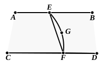
If two straight lines be parallel and points be taken at random on each of them, the straight line joining the points is in the same plane with the parallel straight lines.
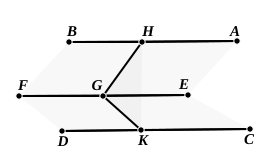
Straight lines which are parallel to the same straight line and are not in the same plane with it are also parallel to one another.
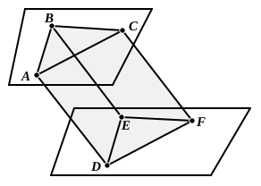
If two straight lines meeting one another be parallel to two straight lines meeting one another not in the same plane, they will contain equal angles.
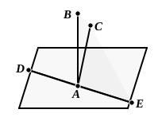
From the same point two straight lines cannot be set up at right angles to the same plane on the same side.
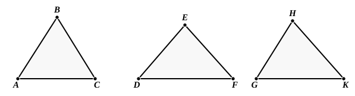
To construct a solid angle out of three plane angles two of which, taken together in any manner, are greater than the remaining one: thus the three angles must be less than four right angles.
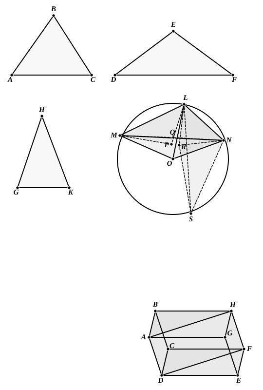
If a solid be contained by parallel planes, the opposite planes in it are equal and parallelogrammic.
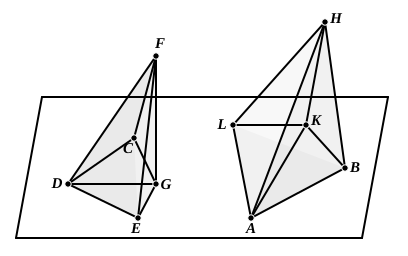
On a given straight line, and at a given point on it, to construct a solid angle equal to a given solid angle.
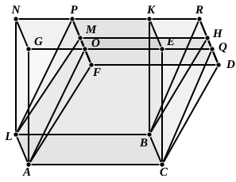
Parallelepipedal solids which are on the same base and of the same height, and in which the extremities of the sides which stand up are not on the same straight lines, are equal to one another.
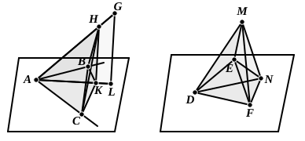
If there be two equal plane angles, and on their vertices there be set up elevated straight lines containing equal angles with the original straight lines respectively, if on the elevated straight lines points be taken at random and perpendiculars be drawn from them to the planes in which the original angles are, and if from the points so arising in the planes straight lines be joined to the vertices of the original angles, they will contain, with the elevated straight lines, equal angles.
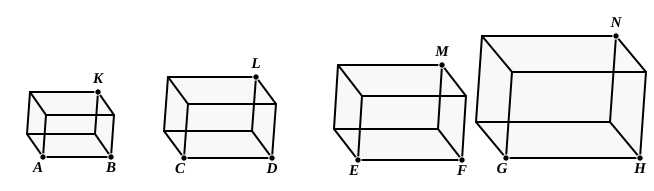
If four straight lines be proportional, the parallelepipedal solids on them which are similar and similarly described will also be proportional; and, if the parallelepipedal solids on them which are similar and similarly described be proportional, the straight lines will themselves also be proportional.
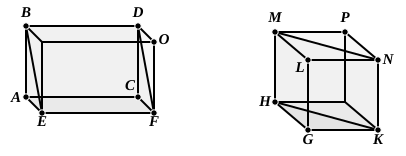
If there be two prisms of equal height, and one have a parallelogram as base and the other a triangle, and if the parallelogram be double of the triangle, the prisms will be equal.